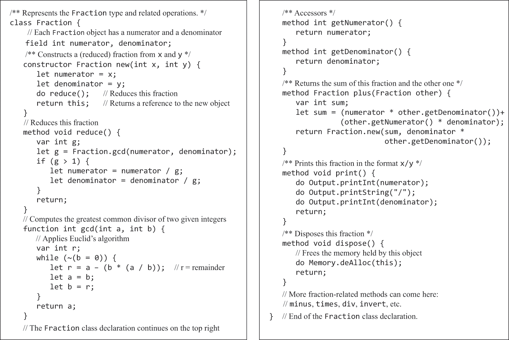
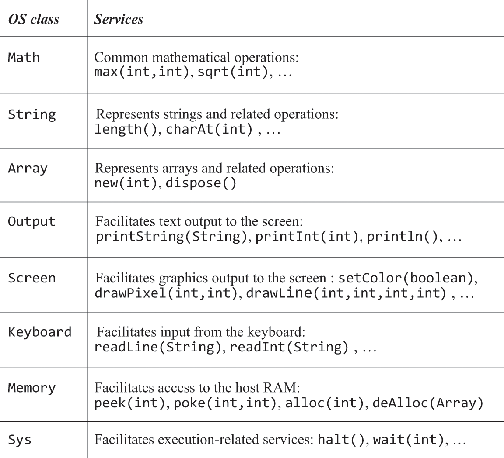

8.2 Jack Examples
Show. Don't tell
Hello World
- Execution starts with a
main.mainfunction - This means we need at least one class
mainwhich contains one functionmain
class Main {
function void main() {
do Output.printString("Hello World");
do Output.println(); // new line
return; // mandatory return statement
}
}
- Comes with a standard library
Jack OSfor various functions including output
Procedural Programming and Arrays
class Main {
function void main() {
var Array a; // arrays are not typed
var int length;
var int i, sum
let i = 0;
let sum = 0;
let length = Keyboard.readInt("How many numbers? ");
let a = Array.new(length);
while (i < length) {
let a[i] - Keyboard.readInt("Enter a number: ");
let sum = sum + a[i];
let i = i + 1;
}
do Output.printString("The average is: ");
do Output.printInt(sum / length);
do Output.printLn();
return
}
}
- Arrays come standard from the
Arrayclass
Abstract Data Types
- Jack has three primitive data types -
int, char, boolean - We create new data types by instantiating classes that combine primitive data types
- Suppose we want to handle rational numbers. We can create a new class which holds two integers
x, yto represent the fractionx / y
- Suppose we want to handle rational numbers. We can create a new class which holds two integers


fieldsspecify object properties (also calledmembervariables)constructorsare subroutines that creates a new objectmethodsare subroutines that operate on the current objectfunctionsare class level subroutines that operate on no particular object- The difference between the two is merely semantic
Linked List Implementation

Operating System
- Currently, use OS classes abstractly
